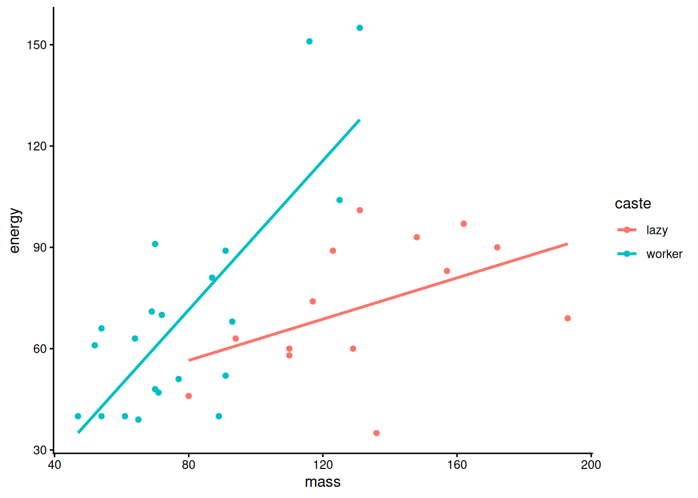

##load in data
clarkia_link <- "https://raw.githubusercontent.com/ybrandvain/datasets/refs/heads/master/clarkia_admix_S22P.csv"
clarkia <- read.csv(clarkia_link)13 Lab 4 Multiple Factor Models
13.1 Multiple regression
Clarkia xantiana xantiana (‘xan’) and Clarkia xantiana parviflora (‘parv’) are two closely-related wildflowers that can reproduce with each other. A group of researchers is interested in what factors promote gene flow between these species. They are particularly interested in mating system: Xan is mostly outcrossing, which means it mostly makes seeds using pollen from other individuals while parv is mostly selfing, meaning it uses its own pollen to make seeds. These mating system differences are related to floral differences – parv flowers tend to have pistils that are close to the stigma so that pollen can easily move from pistil to stigma. The distance between pistil and stigma is called “herkogamy”.
A group of researchers travelled to a group of parv plants and collected data on herkogamy, distance to the nearest xan plant (‘distance2hetero’), and the amount of seeds produced by this plant with ancestry from a xan pollen-parent (‘admixture_proportion’). They wanted to understand how herkogamy and distance together influenced this measure of admixture proportion.
The code below loads in the data
Use lm() to construct two models. 1) admixture as the response variable and herkogamy as the explanatory variable. 2) admixture as the response variable and distance2hetero as the explanatory variable. Is there evidence that both explanatory variables affect the response variable?
It can be difficult to interpret a multiple regression model if the explanatory variables are correlated with each other (this is called ‘multicollinearity’). Make a plot of herkogamy and distance2hetero and use cor.test() to estimate the relationship between these two variables. Are they correlated with each other?
Use lm() to fit a general linear model with admixture proportion as the response variable and distance2hetero and herkogamy as the explanatory variables. Use Anova() from the car package to look at the p values.
You might be interested in whether herkogamy or distance is more important for admixture. Compare the estimages of the coefficients for these two explanatory variables – which one appears more important based on these coefficients?
However, herkogamy is measured on a different scale than phyiscal distance betwen plants. It might be more meaningful to compare these coefficients after standardizing them. The code below does this – it uses a z transform to standardize the explanatory and response variables and then reruns the linear model on this standardized data.
zTransform <- function(X){(X-mean(X,na.rm = TRUE)) / sd(X,na.rm = TRUE) } ##function to do a z transform
clarkz <- clarkia%>% mutate_all(zTransform) #make a new dataframe of z transformed data- Run a new linear model on the z-transformed data with admixture proportion as the response variable and herkogamy and distance2hetero as the explanatory variables. Now, compare the effect size estimates from this model. Which factor matters more for determining admixture?
13.2 Interactions
Mole rats have distinct social castes: workers and reproducing males. However, recent evidence suggests that there may be distinctions within workers. Scantlebury et al. (2006) measured body mass and energy expenditure of active workers and lazy workers in the Damaraland mole rat. They wanted to know how body mass affected energy expenditure and if there was a difference between standard workers and the ‘lazy’ workers they’d identified: specifically, was there an interaction?
Below is some ggplot code to make a scatter plot of the data with regression lines for each category (I like ggplot for making these types of plots)
molerats <- read.csv('https://raw.githubusercontent.com/emjosephs/msu-eeb830831-quarto/refs/heads/main/data/molerat-data.csv')
ggplot(molerats)+
aes(x = mass, y = energy, color = caste) +
geom_point() +
geom_smooth(method = "lm", se=F)+
theme_classic()`geom_smooth()` using formula = 'y ~ x'
Based on these lines, do you predict that there will be an interaction between mass and caste for energy expenditure? Why or why not?
Use lm() to fit a linear model with energy as the response variable and mass, caste, and their interaction as explanatory variables. Use Anova() to look at the output – do you see evidence of an interaction?
Imagine that you show this analysis to your advisor and they tell you that you should have used log-transformed your data to improve normality (since this is an assumption of a general linear model!). Ue ln() to transform mass and energy and fit a new model of ln(energy) with ln(mass), caste, and their interaction as explanatory variables. Compare this model to the previous model. What do you notice? Which model do you think is most appropriate for understanding the biology of this system?